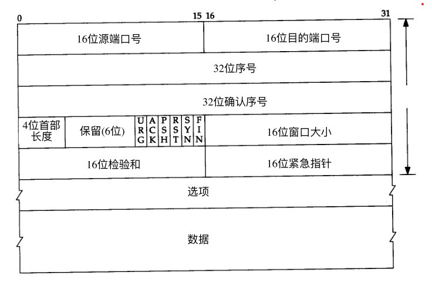
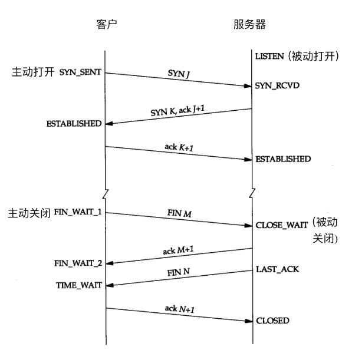

TCP原理#
字段说明#

序号（SEQ）#
序号类似于自增ID，用于标识当前数据包在所有数据包中的位置，它的自增规则如下：
- 发送一个序号字段不为空的数据包时，该数据包本身占一个序号，故响应包的确认号
= 发送方序号+data_length+1 - 发送一个序号字段为空的数据包时（如纯ACK响应），该数据包本身不占序号，故响应包的确认号
= 发送方序号+data_length
确认号（ACK）#
用于接收方通知发送方，前面的包已经收到无误，且下次希望收到序号为几的包。
首部长度字段#
表示TCP头部一共占几个32bit，也就是说，TCP头部的最大长度为 = (2^4-1) * (32/8) = 15 * 4 = 60字节。
窗口#
用于接收方通知发送方，自己的接受缓存区剩余字节数，最大为2^16-1=65535，当需要更大值时，通常加入窗口缩放因子字段（window scale），例如窗口字段为2048，缩放因子为8，则实际窗口大小为：2048 « 8。
标志位#
URG 紧急指针（u rgent pointer）有效 。 ACK 确认序号有效。 PSH 接收方应该尽快将这个报文段交给应用层。 RST 重建连接。 SYN 同步序号用来发起一个连接。 FIN 发端完成发送任务。
连接过程#
A>B
随机一个序号A_SEQ：100，（意义：告诉B，A的初始序号）
确认号：空
在控制区设置SYN：1
在选项区添加MSS:1460，（意义：告诉B，A能接受的最大数据区大小，通常为1460：MAC包1514-MAC头14-IP头20-TCP头20）
A<B
随机一个序号B_SEQ：200，（意义：告诉A，B的初始序号）
确认号：101（A_SEQ+data_length+1），（意义：告诉A，B想要序号为几的包，上一条SYN本身占一个序号）
在控制区设置SYN：1
在控制区设置ACK：1
在选项区添加MSS:1460，（意义：告诉A，B能接受的最大数据区大小，通常为1460：MAC包1514-MAC头14-IP头20-TCP头20）
A>B（纯ACK响应）
序号A_SEQ：空
确认号：201（B_SEQ+data_length+1），（意义：告诉B，A想要序号为几的包，上一条SYN本身占一个序号）
在控制区设置ACK：1
在选项区添加最大序列大小字段，通常为1460（MAC包1514-IP头20-TCP头20）MSS：1460
发送数据过程#
A>B（发送三个字节abc）
序号A_SEQ：101，（意义：告诉B，这是序号为几的包）
确认号：201（B_SEQ+data_length+1），（意义：告诉B，A想要序号为几的包）
在控制区设置PUS：1
在控制区设置ACK：1
选项区：空
A<B（纯ACK响应）
序号B_SEQ：空
确认号：101+3+1（A_SEQ+data_length+1），（意义：B想要序号为几的包）
在控制区设置ACK：1
选项区：空
断开过程#
A>B
序号A_SEQ：105，（意义：告诉B，这是序号为几的包）
确认号：201（B_SEQ+data_length+1），（意义：告诉B，A想要序号为几的包）
在控制区设置FIN：1
在控制区设置ACK：1
选项区：空
A<B（纯ACK响应）
序号B_SEQ：空
确认号：106（A_SEQ+data_length+1），（意义：告诉A下次从第几字节开始）
在控制区设置ACK：1
选项区：空
A<B
序号B_SEQ：201，（意义：告诉A，这是序号为几的包）
确认号：106（A_SEQ+data_length+1），（意义：告诉A下次从第几字节开始）
在控制区设置FIN：1
在控制区设置ACK：1
选项区：空
A>B（纯ACK响应）
序号A_SEQ：空
确认号：202（B_SEQ+data_length+1），（意义：告诉B，A想要序号为几的包，上一条FIN本身占一个序号）
在控制区设置ACK：1
选项区：空
TCP状态变化#

参考#
- TCP/IP详解-卷1
- TCP/IP详解-卷3